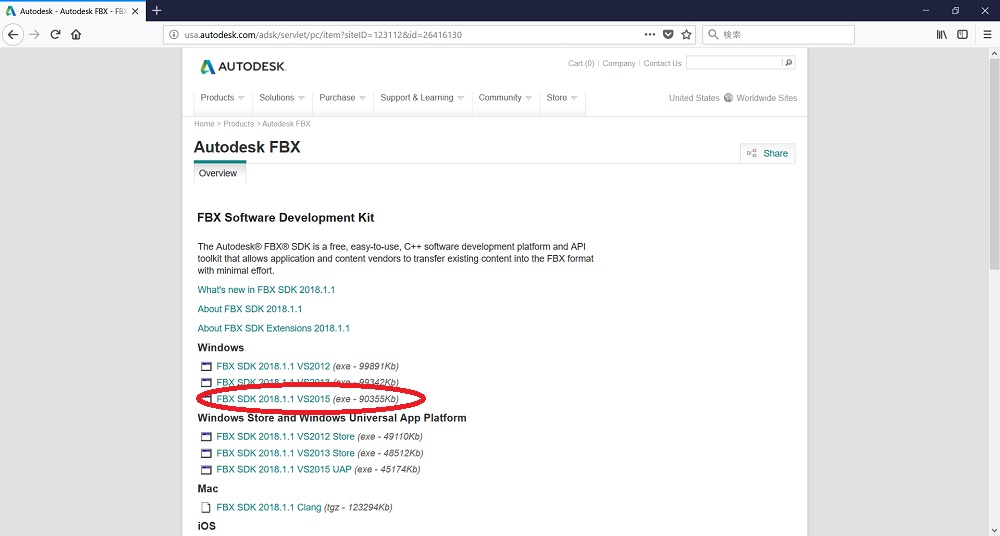
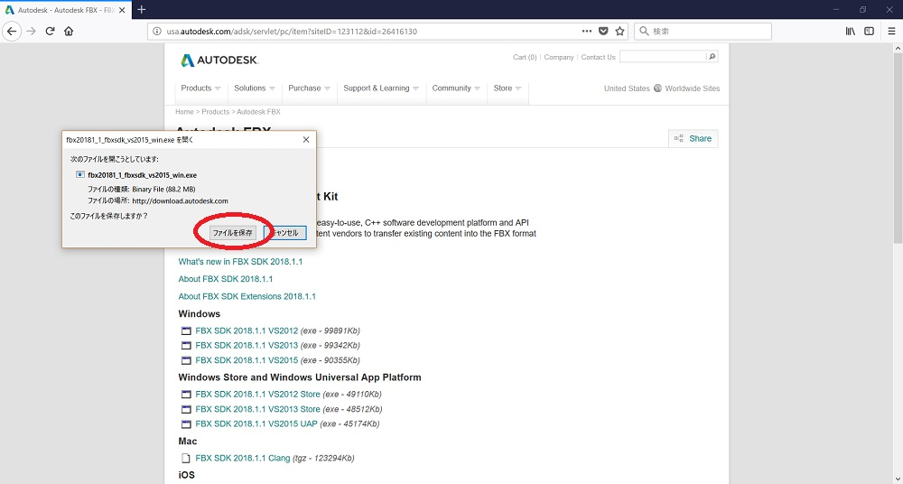
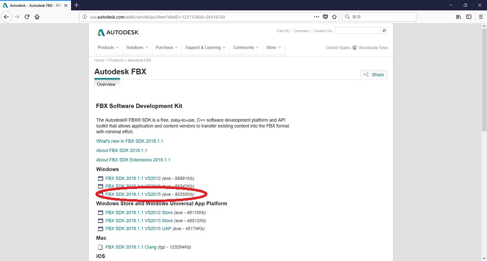
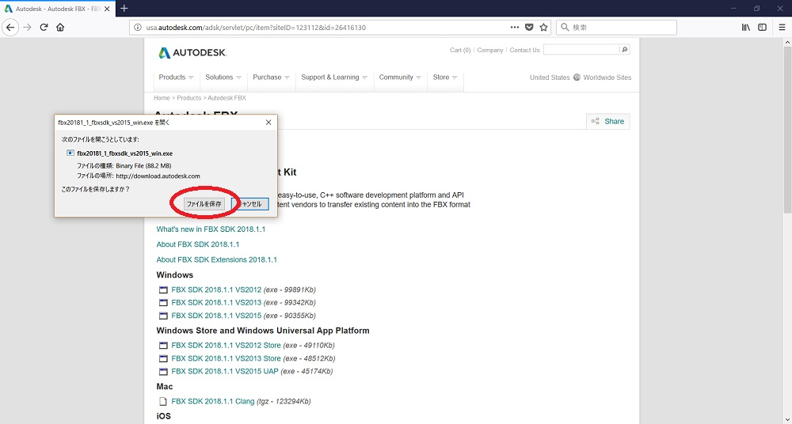
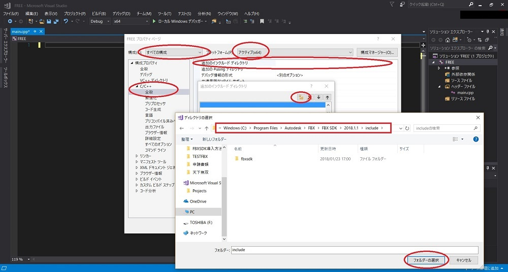
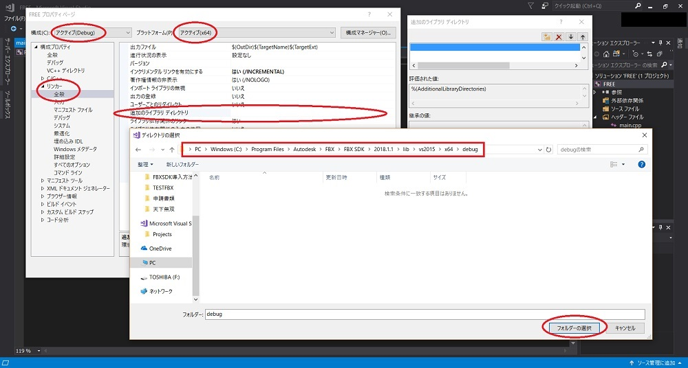
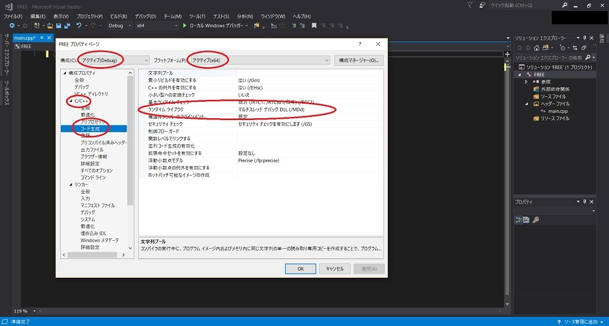
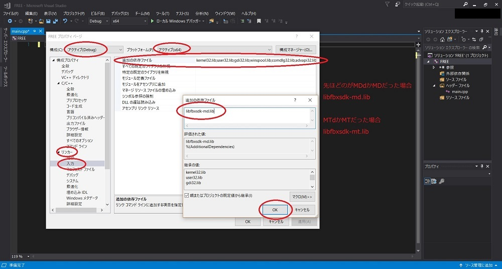

「FBX SDK」と検索してください。
以下は画像で説明します。


ダウンロード済みなのでここからは端折りますが次へなどあればそのまま進んでください。
ダウンロードができているか以下の階層にファイルがあるか確認してください。

これでダウンロードは終了です。
エンジンではなくライブラリだけでFBXを使う人用、ほぼ自分の確認のため
今回はFBX SDKを扱うための導入について説明します。ちなみに画像を多く使って説明します。
以下のURLからFBX SDKをダウンロードしてください。
「FBX SDK」と検索してください。
以下は画像で説明します。


ダウンロード済みなのでここからは端折りますが次へなどあればそのまま進んでください。
ダウンロードができているか以下の階層にファイルがあるか確認してください。
これでダウンロードは終了です。
Visual Studioを起動してプロジェクトを作成してください。ただの確認のためなのでコンソールアプリケーションで作成してください。
以下画像で。





これでダウンロードは終了です。
それで設定がうまくいってるのかを確認するために以下のコードをひとまずコピペでテストしてください。
#include "stdafx.h"
#include "fbxsdk.h"
int main()
{
FbxManager* manager = FbxManager::Create();
manager->Destroy(); //これを呼んでおけばFBX SDKのメモリ解放忘れはないはずです。
return 0;
}
エラーなく実行できていれば設定はちゃんとできています。エラーが出た場合は何かしらでミスっています。
以上で今回の説明は以上となります。